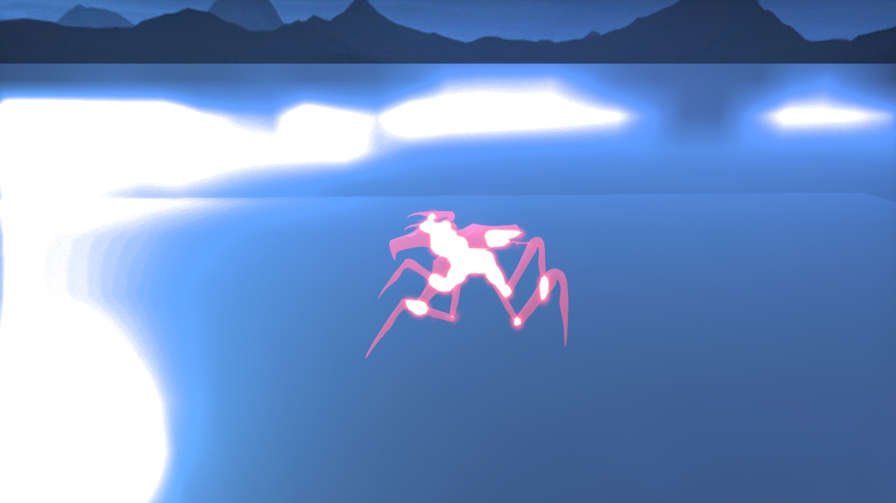
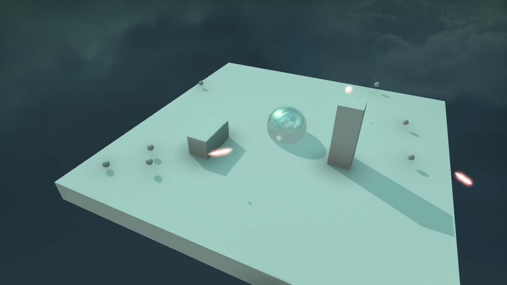

|
Rasterization-DiscoBall
|
|
Rasterization-DiscoBall
|
Newest entries are at the top
Tweaked the tower again. There was an error wtih tracking that cause the towers to prefer to shoot projectiles on some sides even though there were closer enemies. The towers now attack enemies that are closest to it. Also worked on adding a recoil like effect to the enemies when they are hit. They now jitter and move back and a projectile is spawned from them to simulate the original bullet bouncing off of the enemy. This involved changing how VisualControl processes Change information from Map.cpp. Whenever an object is hit, it adds in a random displacement vector. In addition, tweaked the sounds to be more appropriate.
Kai worked on an absolutely amazing shader! I played around with the lambertian, transmisive, and emissive nature of the underlying 3d objects as the shader made everything look a lot darker. However, Kai's amazing work really brings our piece closer to the original art direction we were aiming for, ie. Tron inspired simple shapes with glowing outlines to emphasize the physical geometry. Below are some different color style changes I iterated over:
Fixed reading and writing to samething but adding a second buffer. Finally found out a good shader while trying out the Sobel operator. It turns out that if I leave the last step unfinished, the intermediate result looks really good. Should be using that in the end. Also, interpolating between the results could create a nice effect of "going back to reality".
Fixed one mistake and shader looks better: should be "sqrt(xx+yy)" isntead of (x+y)/2 when combining the horizontal and vertical results. (Why you use average in the first place!!)
Put more priority to path that lead to the discoball...For sure...Also, it seems that if there's no path, AI will just rotate in the same palace. Don't feel like actual implementing status check or whatsoever, used some dirty tricks so whenever that it seems there's no path, just brute force to Disco ball and destroy everything in between.
Worked on camera movement and tower tracking. The towers are no longer able to shoot in all directions but their attack power is increased to reduce the amount of projectiles that fly accross the screen. This tweak was a bit tricky given how we still needed to compute several ray casts on the objects around, but only used the closest intersected object instead. In the end it raycats several times but only attacks the raycast entity that is actually closest to it. Also worked on changing the way the camera works so that DebugCamera is no longer the required option. Since most of the camera movements was rotating around our 15x15 underlying grid, I though that restricting camera movement to rotate around the central point and to zoom in and out would work the best given our gameplay. Lastly, optimized the game further by removing the 15x15 1x1x1 cubes that formed the underlying grid layer. It is now a single large cube instead of several smaller cubes.
▶ Play Video |
| example of camera control features |
I was also able to add in basic explosion effects for when the enemies are destroyed. The game spawns several cubes that move quickly away (and that are high in glowing effect) to simulate a pixel/Tron like explosion. The aim here was for non realistic looking explosions that looked cyber like. To this end the explosion isn't fast like a normal explosion, instead it slows down over time - check out the trailer for a more detailed glimpse at this. Implementation wise, to do this I created a separate Animation.cpp class that is spawned in VisualControl.cpp. Animation has a step method in which it controls the position of the VisualEntity object that is passed as a parameter to it. This way I was able to create instances of Animate which would then move their VisualEntity objects to simulate an explosion etc.
It seems that the best way to add good visual effects is through post-processing shaders. Looked into several GLSL shaders and I should copy one of the toon shader....
Ooops how can I pass m_framebuffer to the shader... Asked a lot of people and found no result, just added whatever needed (a sampler, a mipmap, etc.) to make sure I could pass m_framebuffer to the shader. Tried several shader style and none of them really works. Maybe I should give up...
Also, shouldn't be reading and writing from the same buffer, it creates really weird lines that's obviously due to reading datas that are just written. Should try to fix that.
Changed that so HP actually scales when game advances to make sure users don't get too much gold from spawn killing weak mobs. Done by adding an extra maxHP variable. The HP returned in change is still 0 to 100, scaled based on the maxHP. Now the game is really hard....
Worked a while today on choosing a proper color palette for our game. Worked through several different versions. In the end I began to converge on a transparent look for the enemies and a darker total look for the entire scene. I turned off most of the lights to achieve this effect and added glossy/transparent preprocessing effects to most of the game entities. Also downloaded several models online. Was hoping to find a critter like object but instead got a lot of drone like 3d models and one arachnid model. These models were usually way too big and our game's performance suffered significantly from their input. Therefore after several different iterations with several 3d models I ended up opting for the simple sphere enemy in order to optimize the game's performance. Also added in an explosion effect to the enemy's death. This involved adding in extra code to the VisualControl.cpp class that receives change updates from Map. Finally worked on tweaking sound effects as well to be more appropriate with our game's tron like art style.
Below, the original enemy models I tried to experiment with.
| old critter |
|  |
| old critter |
Also here is the basic art style. Tried to get a tron like cyber feel.
| old art style for our game |
Thought about path finding, seems that the easiest way is just a limited-depth DFS....Turned out to be more difficult because it's hard to create a good distance estimator with a lot of random walls. Decide to increase the search depth which may make things slower but will certainly work....
Worked on changing the overall look of the game from the simple lambertian colors of before. I was aiming for a Tron like feel which would involve darker grid like cubes, transparent objects, and bright light contrasts. To this end I modified the scene file and looked at the feature.test.scn.any to get some pointers on what properties of the game's look that I could change. I also looked online for models that could replace the simple block and spheres we were using for the enemy models.
Creatures should now enter from away the actual playable map. This is achieved through setting the oldPos away from the map and the newPos at the edge the map when creating the creature. In addition to that, all the relevant methods now check if the MapElement is in map in order to prevent out of boundary errors.
There was a very dumb glitch that took several hours to debug, pretty much the AABoxes were being initialized incorrectly and the towers were subsequently unable to find their targets... Also worked on cleaning up some code and cleaning out some errors (like deleting ground cubes leading to errors). Finally I was able to make the shots from the towers visual, as in the towers now lob spheres at the enemy. This required some hacking of the original code to allow for a fast moving object.
| towers! |
|  |
| laser beams! |
| save that discoBall! |
Let's name the thing we are defending disco ball. How nice is that? Meaningless name get meanings!!!
Ok, cleaned up something and added GUI. Also added simple economic system so cube costs money. Everything should be working pretty soon. I should work on report tomorrow. -Kai
If cube falls it should crush minions. What a nice feature. CRUSHHHHHHHHHHHHHHHHHHHHHHH!
Pathfinding is hard. Let's through that away. Implemented Crawler that moves randomly, able to climb up a bit and falls if nothing is below. Pretty hilarious movement.... But... Then can attack cubes.
We don't have tower... So let's make cube do damage. And yes... Cube can kill Crawler and Crawler can kill Cube. Done. -Kai
Made the final finishing touches to moving existing code from VisualControl to the AABoxManager class. I then began to create a BasicTower class that extended from Cube. This BasicTower uses methods in the AABoxManager class to find which objects are close by and which objects it can actually hit. This system was bugged when I left but the basic framework was in place.
Started the day by working on a basic ai system using the Map.cpp framework that Kai provided. Creatures have move methods which can be modified to change their behavior. Our 3d grid architecture came to help us here. Instead of having to do real collision detection the ai only have to check the 3d grid of isBox to check if they can move to a new space or not. In the data a creature's position and any object's position in the game can only be a 3d grid position, however, we want to do several end tricks to make it less obvious that objects can only inhabit discrete positions in our 3d grid space.
I also worked on moving the code from VisualControl into a separate AABox manager class. The idea here was to have every moving gameobject and physical gameobject in our game have a AABox attached to them. This way, we can raytrace from one position and know which objects we have hit. With this ability we would be able to make towers that could tell if they had a clear line of fire to another creature in the game. This process took a while, I had already implemented tracking of AABoxes in the VisualControl class but I had not yet done so for all of the creature entities. Therefore I had to move code from VisualControl to AABoxManager while adding in extra functionality and code to support the tracking of AABoxes for the creatures.
It seems that some moves take longer than others. Let's just get rid of keyframes in total. Instead of interpolating in App, let's interpolate in Map. The idea is implementing a separate run() method, that calls move() only if turnsLeft = 0. If move is called, then the interpolated displacement per turn should be called. In this way could implement different move speed. Yay. Side effect: cube physics engine looks more real... -Kai
Attack can be achived by keeping track of HP. Discussed about how we can implement attack. It seems that the easiest way for the moment is just to implement splash damage for every grid. -Kai
Adding methods that helps attacking. I love OOP.
Now cubes should be falling properly if it looses support. Does that by calling move() for every MapElement when getChange is called. -Kai
It seems it's pretty cumbersome to make getChange handle everything. While doing the if statements, I suddenly realized that I could use OOP techniques (yes how can I forget 136). By implementing methods such as move(), onDeath() and onSpawn() and throw the map elements a pointer to a map, I should be able to do everything without worrying about conditional checks... But now the problem is.... why it sounds so horribly like darwin?!!!! Are we implementing 3D DARWIN????? W!&$(!**(!*&$( -Kai
For the changes to be reflected visually, we need some way to communicate with App. The proposed solution is to implement a getChange() method which compiles a list of changes every keyframe.. App can then interpolate between those keyframes by diving change by updateRate. So map information will be updated everytime getChange() is called. Sounds pretty legit. -Kai
So obvious we cannot place cubes everywhere. It's gonna be worse if we can delete something and just make cubes floating.... So we need a rule. The rule proposed: if there's no cube beneath a Cube, then we need to make sure it has two adjacent(horizontally) grounded cube. This simple rule works pretty well. We can enforce it to adding cubes easily by doing canAddCube... To make cubes fall, we need to actually implement the motion... -Kai
Worked on adding a separate visual controller for managing the data. The new VisualControl class manages data from Map.cpp. Map.cpp communicates with VisualControl through the App.cpp class. It is the job of App to pass in Change.cpp files to the VisualControl. Change.cpp is generated by the Map.cpp file and is used to update the VisualControl with what has been going on in Map. I also wasted a lot of time trying to get graphs to work! Unfortuately I had little success and lot of memory issues. Lesson learned, don't make circular references with shared pointers. We were subsequently unable to make ai that were able to use bfs to find the best way into our base.
Finished the minecraft like features of adding in cubes to the screen. There were some memory bugs that still needed work and I was able to find and fix them all today.
As we need to have more than one type of objects on the map, some kind of polymorphisms is needed, and I forgot about everything in CS334 already.... Took a while to figure all this out. So, Cube and Creature inherits from MapElement and etc. If we have an array of pointer to MapElement, then every method that should be differentiated when calling should BE DECLARE VIRTUEL (oh god how can I not remember this...) -Kai
Debated about how we should implemented pathfinding. Tried to implement that graph that's updated in real time, but found that hard. In the end, one graph is probably not enough because different creature may have different behaviors. SO.... why not just do path finding on the grid? We have gridOccupancy for sure... -Kai
Representation of the map should be separated from the graphics. There are many ways to represented a three dimensional structure. Thought about octtrees, but as the map is gonna be small, a 3D array should suffice. Integers only, therefore, let's think about visual effects(place within each grid) later.
We need to be able to find out the location of each object on the map. Thought for a long time if I should make the 3D array point to the actual objects, but realized that we probably don't have to do that. We need to iterate through every objects every turn, so let's just make an array of vectors and let the 3D array only represent the degree of crowdness in a certain position. If we really need to find one particular object, we could probably just do a for loop of comparison.
The map should be separate class that provide APIs to App and other possible classes, to be figured out later. -Kai
Worked on adding a minecraft like element to the game. Had a lot of problems with getting the user to be able to place a cube in space relative to other cubes. Mulled over several different ideas here, in the end, we keep track of AABoxes that are associated with all of the cubes that have been placed on the screen so far. Whenever a user wants to place a Cube, we cast a ray from the mouse position towards the scene. The AABoxes are then checked to see which one has collided with our ray and then we find the closest one to our starting point. However, this gets us a cube when we want a position to place a new cube. To work around this we cast another ray but at only 6 cubes, one in every direction of our original cube. Then the cube that is intersected is our possible build position for our new cube. Now when the user clicks on the screen they can place cubes and when they shift left click on the screen they can delete cubes!
Random cube creation with the game so far:
 |
| "just like minecraft!" |
The goal is to make a tower defense game with modifiable terrain. Combining the cubes to make player's own defense system fits the concept of "union".
Debated about whether to keep the game 2D or 3D. 3D seems to disorient the player and make interaction faster, but decided to stay in 3D and try to make interaction easy.
Possible that we could color the cubes to add lots of interesting effects: bridges, portals, barriers, etc.
 1.8.7
1.8.7


{kind=link}
{kind=link}
{kind=link}
{kind=link}
{kind=link}
{kind=link}
{kind=link}
{kind=link}